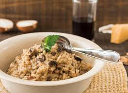

Aliña con aceite de trufa, jugo de limón, sal y pimienta al gusto.
Esparce el queso parmesano rallado por encima.
Añade unas hojas de rúcula fresca para decorar.
Risotto de Hongos Silvestres con Parmesano y Aceite de Trufa

Ingredientes:
200g de arroz Arborio
200g de hongos silvestres variados
1 cebolla picada
2 dientes de ajo picados
500ml de caldo de verduras
50g de mantequilla
50g de queso parmesano rallado
Aceite de trufa
Sal y pimienta al gusto
Preparación:
En una sartén grande, derrite la mantequilla y añade la cebolla y el ajo. Sofríe hasta que estén dorados.
Agrega los hongos y saltea durante unos minutos hasta que estén tiernos.
Añade el arroz Arborio y revuelve para que se impregne de la mantequilla y los sabores.
Poco a poco, agrega el caldo de verduras caliente, removiendo constantemente hasta que el arroz esté cocido al dente y haya absorbido la mayor parte del líquido.
Retira del fuego y mezcla el queso parmesano rallado.
Condimenta con sal, pimienta y un chorrito de aceite de trufa.